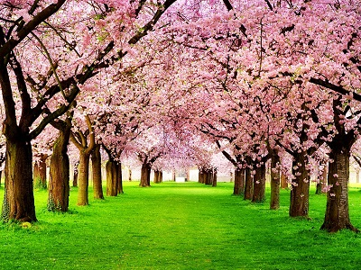

Цветок
Цвето́к (множ. цветки́, лат. flos, -oris, др.-греч. ἄνθος, -ου) — сложная система органов семенного размножения цветковых (покрытосеменных) растений.

Цвето́к (множ. цветки́, лат. flos, -oris, др.-греч. ἄνθος, -ου) — сложная система органов семенного размножения цветковых (покрытосеменных) растений.
В Японии вишнёвый цвет символизирует облака (благодаря тому, что множество цветов сакуры часто распускаются вместе) и метафорически обозначает эфемерность жизни. Это второе символическое значение часто ассоциируется с влиянием буддизма, являясь воплощением идеи о моно-но аварэ.
Когда бы вишни дивные цветы
Средь распростёртых гор всегда благоухали
День изо дня,
Такой большой любви,
Такой тоски, наверно, мы б не знали!
Ямабэ-но Акахито
| Длинный абстрактный заголовок раз | Абстрактный заголовок два | |
|---|---|---|
| Высокая абстрактная ячейка раз |
Абстрактная ячейка два | Абстрактная ячейка три |
| Абстрактная ячейка четыре | Абстрактная ячейка пять | |